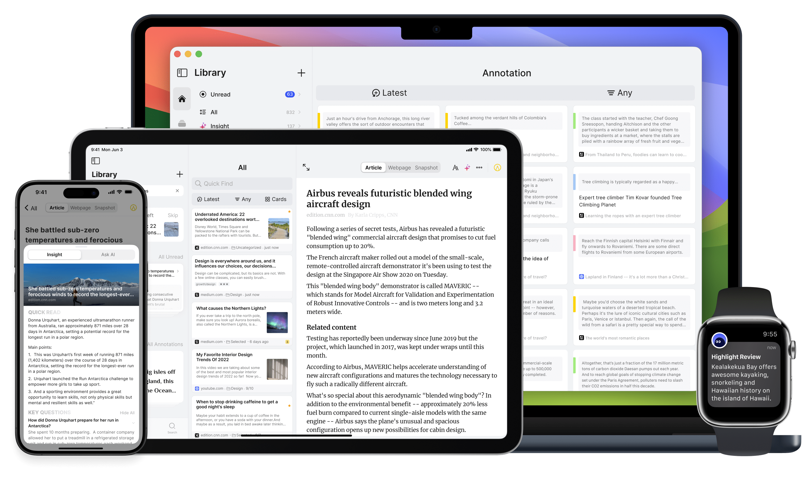
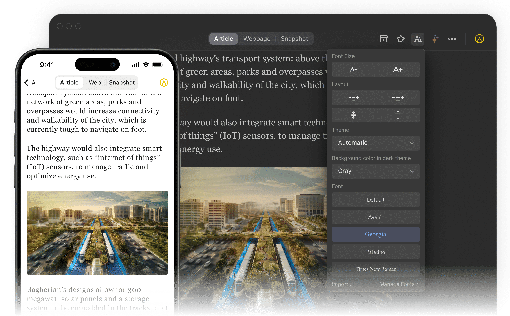

把碎片时间收束成体系：Cubox 这款阅读收藏工具的能力全景
从收藏入库到标注回顾，从沉浸式阅读到 AI Agent 接管，Cubox 能把散落在各处的信息真正沉淀成个人知识库。
信息过载不是新问题，但每个时代总有一款工具试图给出比"收藏夹"更像样的解法。Cubox 就是这样一款，去cubox官网看看它的定位远不止是"稍后读"——从浏览器扩展一键存网页，到手机端沉浸式排版读完，再到高亮标注被重新推到眼前，整条链路串起了"遇见 → 存入 → 读懂 → 记住 → 输出"五个环节。
写这篇盘点之前我断断续续用了将近一年，期间经历了它的几次大版本更新——从纯工具属性到 AI 能力渗透，再到近期把 CLI 开放给 AI Agent，这款产品的演进方向本身就值得认真看一眼。
收藏入库：从各种渠道把东西扔进来
收藏的第一步从来不是"整理"，而是"别漏掉"。安装包从cubox下载拿，装好之后 Cubox 在入库这件事上做足了渠道覆盖。
浏览器端有扩展，点一下就把当前页面存进库，自动抽正文、去广告、保留图片——这是最常见的入口。移动端支持分享菜单，任何 App 里看到的链接都能直接转发进来。还有一个有意思的渠道是微信：绑定账号后，把公众号文章或聊天里的链接转发给它的微信助手就完成入库，在国内社交场景下这条链路的摩擦系数几乎为零。

入库时自动做两件事：一是网页正文解析，把弹窗、导航、侧边栏全部剥掉，只留干净的文章内容；二是可选的网页快照，即使原站后来删了文章，你本地还有一份完整副本。这两个动作对收藏工具来说是基本功，但 Cubox 在解析质量上一直做得比较稳定——我偶尔会碰到某些小众博客正文抽取不全的情况，但主流媒体、技术博客、公众号几乎都能正确识别。
沉浸式阅读：把网页变成书
存下来的东西能不能真的读完，取决于阅读体验。Cubox 的阅读器是我用过的同类工具里可调项最丰富的之一。
排版设置面板分四组：字号、版式、主题、字体。字号两档按钮缩放，版式控制每行字数和段间距，主题有浅色、深色、跟随系统三种模式（深色下还能单独调背景灰度），字体则内置多套衬线和无衬线字体，甚至支持导入自定义字体文件。中文用户对字体的敏感度可能被低估了——把正文字体换成自己在 Kindle 或纸书上习惯的那款，阅读体验的提升是肉眼可见的。
场景化搭配是它的另一个亮点。长文精读时用衬线字体加大字号、适中页宽，印刷书的观感能让你读几万字也不累；通勤碎片阅读则切深色主题加紧凑布局，地铁强光下不刺眼；睡前阅读可以叠一层暖色背景，和系统夜览模式配合使用。这些不是预设好的"阅读模式"按钮，而是让用户自己组合参数——自由度高，但也意味着第一次上手需要花两分钟调一次，之后长期受益。

阅读器还内置了 AI 语音朗读，长文不想看的时候可以切听书模式，这个功能我在做家务或通勤时用得很多。
标注与回顾：让高亮不再死在库里
大多数收藏工具的标注功能都是"划完就忘"——你可能有几百条高亮分散在几十篇文章里，再也没有回来翻过。Cubox 对这件事的解法很务实：不是提醒你"去整理你的标注"，而是把旧标注重新送到你眼前。
标注浮顶是最直接的方式——把重要标注置顶，打开应用先见旧句再见新文。手机桌面还能放一个标注小组件，每天轮换展示你以前划的摘录，通勤排队时抬眼就能读一句。Apple Watch 用户也有专属支持，手表复杂功能里直接显示高亮摘录，等电梯的间隙就能回顾一条。再配合定时提醒，系统推送会定期把某条标注送回来。
但这些都只是"送到眼前"，真正让标注活起来的是回顾工作流：按颜色或标签过滤出某个主题的旧标注，精读几条当年划的重点，补写新想法，有价值的直接整理进写作素材库。Cubox 官方把这条链路叫"收藏 → 阅读 → 标注 → 回顾 → 输出"，回顾是承上启下的关键一环——没有这一步，标注永远只是阅读过的痕迹；有了这一步，标注才能变成可复用的思考素材。
让回顾可持续的技巧也很值得一提：每篇只划真值得回来的两三段，标注的信噪比才高；用颜色区分优先级，最重要的标记色设为小组件优先展示；把回顾绑定在固定场景（比如早晨喝咖啡时），比靠意志力靠谱得多。
AI 助手：从自动摘要到 Agent 接管
AI 能力是 Cubox 最近几次更新的主轴，也是它和同类工具拉开差距的地方。
入门级的 AI 能力包括自动简报和智能摘要。长文存进来后可以一键生成几百字的精华摘要，快速判断要不要精读；每周 AI 简报会自动汇总你最近收藏但没读完的内容，用自然语言告诉你"这周你存了 12 篇，其中 3 篇和 XX 主题相关"。这些功能本身不复杂，但对于信息摄入量大的用户来说，能省掉大量"要不要打开"的判断成本。
真正让我印象深刻的是 CLI 接入——官方把整个阅读库开放成了命令行接口，任何 AI Agent（Claude Code、Codex、Cursor、Trae 等）都能通过一行指令授权读取或操作你的库。Agent 能替你做的事情远超"批量收藏链接"：按收藏夹标签星标状态做时间关键词检索（支持自然语义）、读取解析后的正文和 AI 解读、按颜色关键词过滤标注、列出收藏夹结构、改星标已读归档移动打标改标题。
官方展示过一些组合指令的场景："你刚找的这几个资料，收藏到学习文件夹""把三个月前收藏还没看的都标记已读""总结最近一周的未读，没价值的直接归档""我想写一篇关于某主题的文章，从库里挑参考并附链接""我的标注里反复出现的主题是什么，我可能漏了什么角度"。这些指令背后是 Agent 对整个知识库的直接调用——之前"整理收藏"是下班后的家务，现在是一句自然语言；之前库里十年的沉淀只能靠搜索偶尔捞，现在是 Agent 随时可调用的记忆。
整理归档与输出互通
整理层面，文件夹和标签是基础，智能列表是进阶，规则配置和参数细节可以去cubox文档翻。智能列表靠规则自动归类，比如"最近 7 天收藏且未读"或"包含 XX 标签且有标注的文章"，人和机器各管一层：规则管日常自动归类，Agent 管复杂指令和深度整理。
输出方面，Cubox 支持把高亮和标注导出成多种格式，也提供了从收藏到写作的集成路径——标注回顾阶段产生的素材可以直接进写作稿。值得一提的是，即使会员到期不续费，账号数据也会被完整保留，随时可以导出你的所有链接和标注——这在订阅制工具里是少见的承诺，降低了很多"怕跑路"的顾虑。
短板也要说
盘点了这么多好的地方，也有几个值得留意的局限。
首先是价格门槛。Pro 会员和 Pro+AI 会员的定价不算便宜，AI 能力是锁在 Pro+AI 里的，对学生或轻度用户来说可能需要掂量一下。其次是学习成本——可调项太多（排版参数、智能列表规则、CLI 授权流程），第一次上手容易有"我是不是还没搞明白这个工具怎么用"的感觉，需要给自己一点适应时间。
还有一个小问题是小众网站的解析质量。主流媒体和技术博客没问题，但某些个人博客、论坛帖子、带复杂前端的页面偶尔会出现正文抽取不全或图片丢失的情况，这时候手动修一下会比较麻烦。
什么样的人该用它
说了这么多，最后给一个简单的人群画像。
如果你每天会在浏览器里存十几篇文章、收藏几十个链接，但月底翻回头发现大部分都没读过——Cubox 值得试。它解决的不是"收藏到哪"的问题，而是"存了之后怎么真的读完、读完之后怎么不白读"的问题。
如果你已经在用 AI Agent（Claude Code、Cursor、Trae 之类）来写代码或写文章，Cubox CLI 会让你的知识库直接成为 Agent 的可调用记忆——这个组合带来的效率提升是工具本身无法单独提供的。
如果你是那种会在阅读时划高亮、做标注，但回头发现几百条标注再也没碰过的人，标注回顾的整套机制（浮顶、小组件、手表、定时提醒）会让你那些"划完就忘"的标记重新活起来。
总的来说，Cubox 不是一个"收藏夹替代品"，它试图做的是把信息从"存下来"推进到"消化掉"的完整闭环——这在当前的"稍后读"赛道里，是一条还不算拥挤但越来越值得走的路。
关于这套资料，GitHub 上有一份完整的仓库镜像，Gitee 上也同步了一份，GitCode 同样可用，方便国内用户在不同网络环境下查阅和备份。